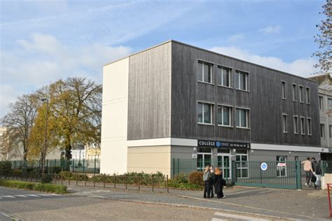
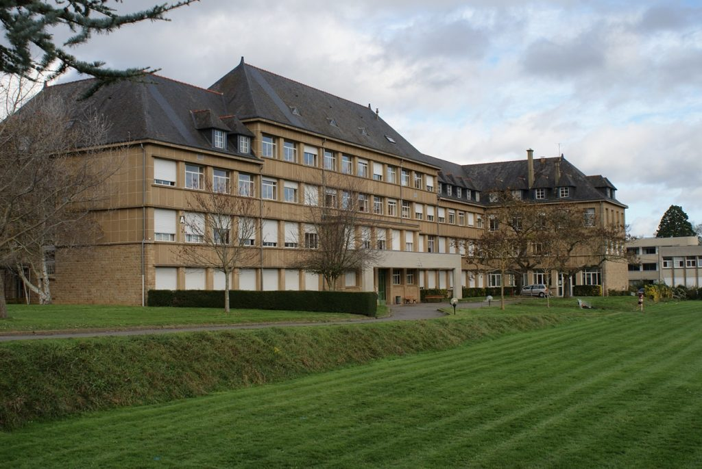

Bienvenue dans mon portfolio
Raphaël Coantin
BTS SIO — option SISR
À propos
Étudiant en BTS SIO, option SISR, je suis passionné par l'informatique et plus particulièrement par les infrastructures réseau et les systèmes. J'ai passé mes années de lycée en STI2D, puis j'ai pris l'option SIN en terminale pour découvrir les bases du réseau. Après je me suis orienté vers un BTS SIO, option SISR, afin de développer davantage mes compétences en systèmes et des réseaux. Curieux et motivé, j'aime apprendre de nouvelles choses et approfondir mes connaissances sur des sujets variés, notamment dans le domaine des technologies de l'information.

